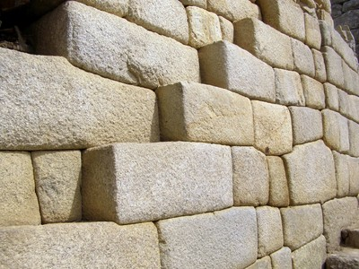
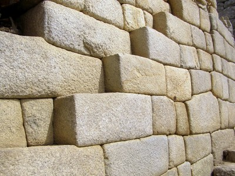

No mortar [MON]
Dry laid masonry units where no mortar has been used.

Masonry walls without mortar (also known as dry masonry) were built by Inca civilization in Machu Picchu, Peru (S. Brzev)
Dry laid masonry units where no mortar has been used.

Masonry walls without mortar (also known as dry masonry) were built by Inca civilization in Machu Picchu, Peru (S. Brzev)